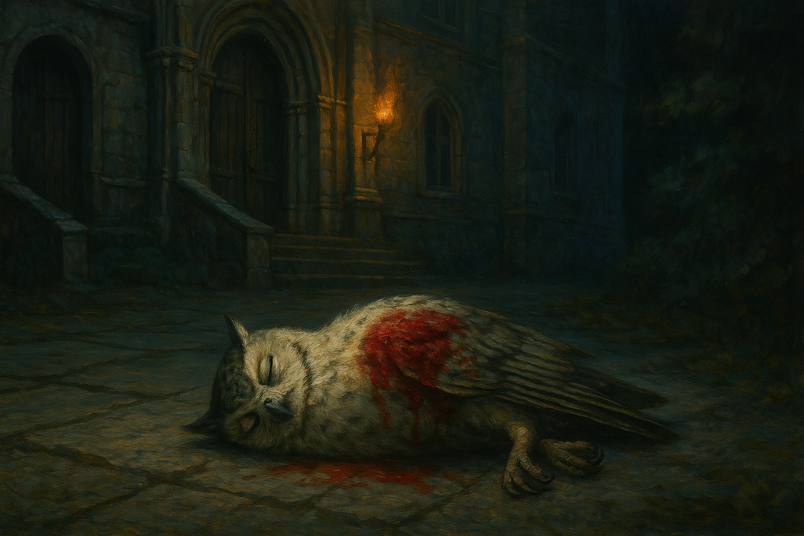

Chapter 1: Mysterious Bites
The Gift from Alfenor

The Gift from Alfenor
15048.11.17
走入漆黑的地下室，Paladin 只能跟依靠直覺跟隨著 Anna。不久後，他看見光線從一扇門內竄出，Paladin 趕緊跟上，進到了門內。
這個房間有點像是個實驗室和辦公室的綜合體。Anna 坐了下來，也示意 Paladin 在他面前的座位坐下。經過 Anna 的說明，他表示自己需要 Paladin 幫點小忙。眼看自己也沒有更好的選擇，Paladin 點頭同意。Anna 從位子底下取出了一個大甕，並請 Paladin 將手伸出。接著，Anna 拿起刀子，從 Paladin 的手掌用力一刺，鮮血汨汨流出。隨著血不停的流，Anna 念起咒語，甕內的血量快速增加，不久後都快要裝滿了，Anna 便讓 Paladin 止血並處理傷口。接著，Anna 拿了較大的四個玻璃瓶，分別將原本用小瓶子裝的黏液倒入大玻璃瓶，並添加足夠的血水進去混合。Paladin 並不清楚 Anna 到底在做什麼事情，也不知道做完以後會有什麼成果，只從 Anna 那裡問到，接下來似乎需要花幾週的時間。
接下來的一兩週內，Paladin 和 Anna 待在實驗室內，Paladin 看著 Anna 的實驗，而 Anna 也花了不少時間研讀書籍。在 Paladin 表現出好奇後，Anna 便和 Paladin 簡單說明了他正在研讀的草藥學，並翻出了一本普通語版本的，送給了 Paladin。Paladin 也利用這幾天的閒暇時間，多少增進了自己對草藥、醫療相關的專業知識。
隨著缸子越換越大，裡面的液體形色更趨迷幻，然後某一天，Anna 將他們放到了身後的木櫃內並鎖了起來。接下來的幾天，兩人就是看書，吃麵包，休息，沒有離開過實驗室。
在缸子被取出木櫃後的某一天早上，Paladin 被孩子的吵鬧聲吵醒，猛然一看，四個年幼的小孩子正在嬉鬧著。Paladin 驚詫地看著 Anna，才發現他似乎真的把他的夥伴們復活？再製？還是不知怎麼重新生出來了。
經過一天，孩子們長成少年少女，開始對事情感到好奇，以及充分的表現自己的各種情緒。Tweeter 對 Anna 研讀的草藥學也很有興趣，在他的要求下，Anna 讓他看了看自己閱讀的妖精語版本的原著，以及 Paladin 閱讀的普通語版。Tweeter 發現了妖精語版的封底內頁，似乎簽了一個名，Alfenor。Anna 表示那是他的祖先，這些技術都是他的祖先傳承下來的。另外，在 Paladin 的解釋下，少年少女冒險者們也了解了在這段時間到底發生了什麼事。
15048.12.01
又過了一天，這幾個少年少女已快速成長成 Paladin 所熟知的年紀了，而且幸好，他們的記憶也都完好如初。然而，Anna 卻消失了，實驗室內的櫃子都鎖了起來，看起來沒有留下什麼有用的東西。
經過了討論後，大家決定離開實驗室，回到地面。走上回到一樓的梯子，原本被鎖上的門現在可以輕鬆推開了。客廳的地上，冒險者們的背包被好好地放置著，裡面除了錢幣以外，東西都存放的好好的。而地上的一張紙條，上面用妖精與寫著：Farewell。
冒險者們在鎮長家進行簡單的探索。Tweeter 在鎮長辦公室找到了他過去使用的手杖，突然發現這把手杖似乎裡面藏了一把長劍，上面還抄寫了月神教的禱詞。
冒險者們走向當初鎮長介紹的「貴重儲藏間」，並將門鎖解開。用力將門扯開，屍體排山倒海落了出來。冒險者們感到驚詫，隨即也看見了鎮長的屍體。經過檢查後，他們發現屍體上都有被蜘蛛咬過的傷口。同時，冒險者們腦中浮現了蟲子爬竄的聲響，他們也發現自己身上似乎浮現了貌似蜘蛛網的印記（Inu 左側後腰、Tweeter 左側肩膀後方、華生右小腿、Sugalu 頸後），像血管一樣向外展開，就連 Paladin 的身上也有（右手食指頂端）。Inu 的印記似乎流出了點黑色的油水，不過在他用火在傷口上處理後，油水沒有再滲透了，Inu 腦中蟲子爬竄的嘈雜聲似乎突然中止了。在華生的操作下，冒險者們向死去的鎮長問出了點資訊，似乎這些傷口很久以前就存在了。同時，Tweeter 也向他的神問出了一個與蜘蛛相關的小宗教，而他們所信仰的神，叫 Alfenor, the Spider King，而他們身上的印記，似乎是種詛咒。
在討論後，冒險者們決定讓 Inu 把這受詛的房子給燒了。冒險者們在空蕩蕩的瑟巴諾走著，曾經的 Town of Villains，現在一個人都沒有了。屍體也不知怎地被清空了，而殘破的房子也沒有被修復。
冒險者們離開了瑟巴諾，決定回到麥克嵩去。花了不少時間，麥克嵩的城門就在眼前。入城後，Paladin 拿起紫羅蘭給他的勳章，卻只從衛兵口中得到了「紫羅蘭在這裡已經沒有影響力了」的噩耗。眾人討論後，決定去找曾經幫助過 Paladin 不少忙的 Mr. Moon。
Mr. Moon 的辦公室 Patton’s 看起來比印象中還要破舊不少，甚至連窗戶都破了。冒險者們走入了辦公室內，深夜的室內，裡面一個人都沒有，只有桌上留有一封信。
「親愛的朋友們，當你們看到這封信時，我已經不在了，不過這是我和月神做的交易，所以我也願意承受。不能再次進到妖精荒野那個好地方很可惜，但是在麥克嵩我也做了很多讓我感到滿意的事，很值得。同時，我也因此能認識不少有趣的人，包括你們。
你們的朋友們都回到他們原本的地方去了，紫羅蘭女士也和弗列里夫婦回寇林菲爾德去了。希望你們不要擔心，也希望你們往後的冒險都能很順利。
能認識你們，是一件很開心的事。
再見了，芬尼爾要帶我走了。
Patton (Mr. Moon)」
冒險者們紛紛找了辦公室內舒服的位子休息，他們很快就入睡了。
而在夢中，一個低沉的男聲伴隨著蟲子竄動的聲響，似乎呢喃著：「我們終於見面了」。
15048.12.02
一早醒來，Paladin 發現他的夥伴們都還在熟睡中，其中，Tweeter、華生，以及 Sugalu 似乎都睡得不太安穩。不久後，除了華生外，大家都陸續醒來了。大家討論著今天該去哪裡，最終決定先前往皇宮圖書館，尋找關於 Alfenor 相關的知識，接著再嘗試去見新任國王，確保 Paladin 爵士的正當性。
在等待華生清醒的時間，Tweeter 翻閱了 Mr. Moon 的辦公室。找到了一本似乎是 Mr. Moon 的日記。上頭紀錄了十幾年前開始 Mr. Moon 的日常，而筆記本停在了 11/12，似乎才剛開始寫，就停了下來。
Sugalu 也在辦公室找到了一把非常小的鑰匙，小到不可能用來打開這間辦公室的門鎖。這把鑰匙甚至做工精細，上面還有貼上金箔，還寫著他看不懂的文字。
在華生醒來後，眾人便決定前往圖書館去。Tweeter 向大家表示自己知道該怎麼去，但 Inu 跑得很快，似乎也胸有成竹。在 Inu 的帶領下，大家來到了麥克嵩王宮花園。
在花園中，Paladin 看見了一位熟悉的身影，Roline，但他選擇假裝沒看見。反之，Roline 趕緊跑了上來，向 Paladin 搭話，想探知 Ron 的行蹤，但 Paladin 卻假裝根本不認識他，Roline 只好沮喪地轉頭離開。Inu 見狀，朝著遠去的 Roline 喊道，如果願意幫忙他們，Inu 可以透露關於 Ron 的消息，並同時告訴 Roline 他知道 Ron 在與他們分別前，正要前往 Dorrenville。Roline 聽見了一絲希望，便折了回來。
在 Inu 的交涉下，Roline 順利的帶了他們進入王宮圖書館。大家約好一小時後在圖書館的大廳見，接著大家就各自去不同地方尋找他們想得到的資料。
Sugalu 才剛進來不久，就因為民眾檢舉被他騷擾，而被衛兵約談，最終因為不願意將武器交給衛兵保管，被請離圖書館外等待。華生試圖和一位年長的志工談話，最終得到的結果可信度卻不太高，最後他也先離開了圖書館，在外面與 Sugalu 一起等待。
Paladin 試著想和服務台的員工詢問關於新任國王上任後麥克嵩的近況，被員工請去旁邊休息區找一位看起來年紀比紫羅蘭還要大個十五歲的阿桑聊。阿桑自稱叫 Eevie，似乎對麥克嵩的近況頗有觀察與想法，也很樂於有 Paladin 這個聊天的對象，他甚至自己跑去圖書館辦公室內請人幫他們準備茶水。在聊了一段時間後，Paladin 大致了解到，新任國王似乎是個比他還年輕的少年，剛上任的這段期間似乎沒做什麼事，但因為長得十分好看，受到不少女子的喜愛。前任國王並沒有死亡，但是退位後卻再也沒有人見過他了。在新任國王上任前，似乎也從未有人聽說過前任國王有個兒子。一切都讓人感到疑惑。
Tweeter 和服務台詢問了關於蜘蛛王的相關書籍，被引導到了童書區去。他看見了一個小孩正在邊唸邊看一本《森林裡的蜘蛛王》，於是便湊到小孩背後聽看。透過這本童書，Tweeter 得知了童話中的蜘蛛王 Alfenor 似乎是住在一座神秘森林內。祂十分討厭人類，只要有人類闖進森林中，就會把他的頭咬斷，然後把身體當作戰利品展示。後來，為了剷除更多人類，蜘蛛王更自己離開森林，到人類居住的地區獵捕人類。最後，一群冒險者成功的把 Alfenor 趕走，但是祂一定還會再回來。
Inu 找了自然類的區域，想針對蜘蛛尋找相關知識，但沒有得到太有用的資訊。不過，他找到了一本看不懂文字的書籍。帶著這本書，Inu 回頭到服務台，向櫃檯詢問這本書。櫃檯人員發現這本書似乎沒有圖書館的標記，帶著書去辦公室詢問後，表示這本確實不是圖書館內的館藏，他便在 Inu 的面前自己將書給收起來了。Inu 也想將這本書佔為己有，卻不被櫃檯人員允許。
離開服務台後，Inu 和 Tweeter 在宗教區相遇，試圖繼續搜尋有用的知識。Tweeter 找到了一名看起來比較資深的圖書館員，透過心電感應向他詢問是否能找到關於蜘蛛王 Alfenor 相關的書籍，館員回應他，這個區域的書應該沒辦法滿足他們的需求，同時，他默默地帶領著 Inu 與 Tweeter，離開宗教區，從一處牆壁的暗門推了開來，門內，是向下的樓梯。
在 Inu 與 Tweeter 走下樓後，圖書館員帶領著他們走到了地下室數間特殊館藏間中的其中一間，邀請他們進去。館員從口袋拿出火柴，將火點在提燈內，並將充足的提燈分配給了 Inu 與 Tweeter，然後帶他們到了一個角落，告訴他們蜘蛛王相關的知識，可以在這邊找到，接著他便回到門口等待。看著書，Tweeter 得知 Alfenor 似乎不是單獨一隻妖精化身的，而是一群妖精對人類的恨意的集體意志，灌入單獨一隻妖精的軀體。他思考著，卻突然聽見了他腦中傳出了 Alfenor 的聲音。Alfenor 和他展開了對話，甚至強致將 Inu 也拉入了這場心靈對話，也同時展現了自己強大的能力。然而，在他們身上的「詛咒」，似乎是他的手下的意思，並不是他親自決定的。Alfenor 也對自己該對冒險者們做什麼，還沒拿定主意。在充滿了未知的情況下，Alfenor 向兩人道別，而同時，他們也發現帶著他們來到地下室的圖書館員，說著與他們腦中聽到 Alfenor 說的話同步著，然後嘎然而止。Tweeter 檢查了一下，發現圖書館員的身體已經乾癟了，就如他們所查到的書上所寫的，Alfenor 殺死的人，都會變成乾屍。
小心繞過化成乾屍的館員，兩人離開了地下室，回到了圖書館大廳，看見了 Roline 和 Paladin 兩人。與 Inu 打聽到了那本被櫃檯摸走的神秘書籍，Tweeter 透過恐嚇的方式，將書拿到手了。雖然不知道這本書是用什麼語言寫的，Tweeter 依舊讀懂了他。裡面似乎是 Alfenor 歷代的祭司，用來記錄詛咒的對象詛咒時間和死亡時間的書，不過裡面記載的年代太過久遠。Tweeter 也發現這本書的材質很特別，仔細研究，才發現他的紙竟然是蜘蛛絲所編織而成的。從裡面的內容，Tweeter 簡單整理：被下詛咒的人，最快 7 天死亡，最慢一個月，沒有看到沒死亡的案例。而超過 7 天的，似乎都被當成是意外被拖延時間了。
眾人不知道 Sugalu 和華生的去處，於是決定先到圖書館外繞繞。而 Tweeter 在圖書館與花園之間的閘口，看見他們兩人正在花園中與貴族談話。
在圖書館外等待，感到十分無聊的 Sugalu 與華生決定乾脆去花園繞繞。華生偷聽著花園內貴族們的談話，試著以自己是貴族的假身份，與他們攀談。華生自稱是露西亞，家裡做的是翡翠的生意，而 Sugalu 則是他的生意夥伴，名為荒咬皇牙。兩名貴族分別自我介紹為做牲畜生意的 Norm 家的 Bernard，與做農作物生意的 Yaso 家的 Pamela。兩人表示因為先前競技場內大屠殺的事件，讓很多人搬離麥克嵩，生意越來越難做。華生也意外打聽到了貴族間似乎有秘密的雜交派對。另外，貴族們也透露國王似乎正在收買貴族們的勢力，因為擔心麥克嵩一個「最有影響力的家族」有篡位的可能性，不過截至此時，兩名貴族還未拿定主意。在兩名貴族與 Sugalu 和華生分別前，Pamela 邀請兩人晚上到他家作客，日落前到花園入口，便會有人來接他們。而 Bernard 則湊到 Sugalu 耳邊，表示雜交派對上見。
Roline 與三名冒險者們在花園與 Sugalu 和華生見面。華生詢問了圖書館內查到的資訊，也同時好奇地詢問 Roline 是否有參加過貴族間的雜交派對。儘管 Roline 大力反對，華生卻在探查他的想法時，發現 Roline 似乎有著精彩的歷史，在認識 Ron 前，他似乎也是雜交派對的常客，不過在認識 Ron 後，他便收斂了，而他非常不希望 Ron 知道這件事。另外，華生也從 Roline 的心智中讀到，對於新任國王，Roline 似乎不太信任，應該說，整個麥克嵩，除了他已退休的父親外，他沒有真正信任的人。
眾人從 Roline 身上打聽到了一名 David 醫生，於是他們決定前往 David 醫生的診間，詢問關於解除蜘蛛王詛咒的可能性。來到了 David 醫生的診間，醫生在處理完最後兩名病人後，便讓大家一同坐在他的辦公桌前。David 先檢查了感覺最不舒服的 Inu，大家也發現他身上的蜘蛛網紋擴散的有點太快了。David 醫生看了感覺不妙，他想了想，想到一個他認為會有幫助的人，於是便先將大家丟在診間內，自己衝了出去。
一小段時間後，門再次打開。門後的是 David 醫生和一名長得和他極為相似，但看起來陰暗許多的男子。David 醫生表示這個人是他的弟弟，叫做 Dennis。Dennis 逕自走向 David 醫生的座位，並看著大家，表示「你們找對人了」。而他身上，散發著濃濃的魔法味，不過這些魔法，似乎不是來自於他自己所施放的魔法……
這位自稱是 Dennis the Demigod 的男子對 Inu 進行了簡單的檢查後，告訴大家，得去一趟「深淵」才能解決這個危機，否則 Inu 一到兩週內就會死去。在確認後，大家了解到 Dennis 提到的深淵（the Abyss）與他們在瑟巴諾從 Hobb 打聽到的 the Deep 似乎是同個地方。Dennis 表示自己去過那裡，也保證能安全把大家帶回來。然而，在前往深淵以前，大家得去西邊的山上採一種植物回來，那種植物的花是深黑色方形的，但是因為路途艱困，加上去一趟很遠，Dennis 表示得由冒險者們自己過去。在冒險者的詢問下，Dennis 也畫了這朵花的樣貌，但是對冒險者來說，根本就是看不懂的塗鴉。為了確保 Dennis 的確去過深淵，Tweeter 模仿他聽見 Hobb 的手下說的話，Dennis 也馬上有了驚恐的反應，因此 Tweeter 斷定 Dennis 肯定是有去過深淵。
然而，對於很多事情的細節，Dennis 都說不清楚，冒險者們因此漸漸感到懷疑。華生對願意開誠布公的 Dennis 讀取了他腦中的思想與回憶，發現 Dennis 似乎根本什麼都搞不清楚。小時候的他曾因為生病而昏迷了數年，在他醒過來後，便自稱去過了一趟深淵，且得到了來自深淵的魔法。在 Dennis 的回憶中，他的確去過深淵，不過比起在那裡冒險，更像是被那裡的居民長期監禁，監禁到他因此心靈受到摧殘。
華生走到診所外，與跑出來透氣的 David 醫生詢問，得知 Dennis 的確不是個多厲害的魔法師，當然也不會是個半神。不過，David 醫生一直以來都很照顧他的弟弟，這次也是終於有個可能可以讓他弟弟「發揮專業」的機會，因此才讓冒險者們淌這渾水。
華生理解後，在手上變出了 Dennis 提及的那種花朵，接著便走回診所內。看見自己口中胡謅的花竟然出現了，Dennis 大吃一驚，便叫大家坐在地上繞成一個圈，接著他把診間的所有蠟燭吹熄，然後叫大家閉上眼，開始唸咒語。幾位冒險者們瞇著眼偷看，發現 Dennis 念一念咒語，就站了起來，在大家身後輪流敲擊大家的頭。在 Dennis 敲到 Inu 時，Inu 用了電擊，將 Dennis 電暈了。大家看穿了這齣鬧劇，便請 David 醫生回來照顧他昏倒的弟弟。
Paladin、Tweeter、Inu 和 Roline 四人決定先去一趟王宮，讓華生和 Sugalu 留在診所，以免趕不上與貴族的晚宴邀約。來到王宮花園入口，Roline 幾句話便讓衛兵打開了門，也打開了花園底的石頭門。石頭門內一片漆黑，且散發出了潮濕悶熱的氣息。Inu 感受到這似乎和當時 YHWH 參觀比武大會的是同一條路，但 Paladin 似乎沒有意會過來。
一群人摸黑往前走，直到 Roline 摸到了對向的門，輕輕推開，門後彷彿另一個世界—一個熱鬧而輝煌的王宮園區。園區內除了衛兵外，幾乎都是穿著制服的僕人們，朝著不同方向前進。大家一面觀賞，一面跟著 Roline 繼續走。
走上一個迴旋的斜坡，王宮近在眼前。Roline 和王宮門口的衛兵說了幾句話，衛兵變進到宮內去。等待期間，Inu 好奇地亂晃，不小心撞到了一名高大的男子，這人自稱是 Gary Berners，是王宮的禁衛軍隊長。
在衛兵的帶領下，一行人終於以 Paladin 爵士之名，走入了王宮，而在一層、一層又一層的門後，大家走入了一個大廳，遠處，便是坐在王座上的現任國王，大約 10 歲的 Elliot 四世，以及站在他身邊一左一右，一名貌似學者的男子，以及一名貌似他母后的女子。
在 Paladin 的詢問下，他確保了自己的爵位還牢靠。同時，他也和國王提到了瑟巴諾發生的事，不過當然是做了不少修改。國王請他身邊的大學士 Ishton 大人稍後為 Inu 檢查。同時，Paladin 也詢問了能否再和國王要一份附近地區的地圖，國王也請大學士 Ishton 隨後為 Paladin 做準備。Paladin 基於好奇，也向國王詢問了關於前任國王的事，國王表示他的父親現在很虛弱，都躺在床上休息。Paladin 也問起了國王身邊的女子，得知的確是他的母后，Marian 女士。然而，Tweeter 認為這位 Marian 女士散發出一種不太對勁的感覺。Tweeter 試圖透過心電感應向 Marian 女士溝通，卻始終沒有得到回應，同時，Marian 女士也沒有展現出聽到心電感應的那種微微驚詫感。
與 Ishton 大人離開大廳前，國王叫住了 Paladin，詢問他是否是站在他這一邊的？並要求他宣誓。Paladin 挑選了自己身上最破舊的一把劍，向國王宣誓，眾人才離開大廳。而在踏出大廳的那一刻，Tweeter 聽見了自己腦中傳來了一聲「啪擦」。他試圖回應，想詢問是誰，那女聲回應道「你會知道我是誰的」。
來到 Ishton 大人的研究室，他讓 Inu 躺在桌上，接著他檢查傷口，翻閱書籍，然後從手上透過能量，從傷口中吸出了大量的蜘蛛，但這些蜘蛛似乎掉到地上後就散落不見了，就像幻影一樣。Ishton 大人也似乎極度疲憊，他表示這樣做好像也沒能減輕 Inu 的症狀，感到無助。不過，他提到過去曾抓到一名似乎與蜘蛛王勢力相關的犯人，關押在王宮監獄內，他可以將這人帶來拷問，於是在大家的同意下，Ishton 大人便暫時離開辦公室了。
Ishton 大人不在時，Tweeter 發現了房間的另一個角落，竟然有隻貓頭鷹。那隻貓頭鷹自稱是睿智的 Oliver，他的家族和 Ishton 的家族長期合作，由他們供給魔法，給 Ishton 一族使用。Tweeter 和 Inu 也透過 Oliver，得知現在的國王似乎只是個魁儡，而他的「母后」似乎不是人類。
不久後，Oliver 表示他發現自己和 Ishton 的連結斷了，Ishton 大概沒救了。Tweeter 提議要帶著 Oliver 去救 Ishton，但 Oliver 表示逃離這裡比較實際。於是，Tweeter、Inu、Paladin 和 Oliver 一同離開了辦公室，而 Roline 則待在辦公室掩護。好不容易穿越了走廊，Inu 卻差一點被趕上來的衛兵抓走。Inu 透過瞬間移動，跑到了門外，而門外的其他衛兵，則追上了 Tweeter 和停在他肩上的 Oliver。一個瞬間，一名衛兵將 Oliver 雪白的羽毛染紅了，Tweeter 也發現 Oliver 死透了。為了不讓 Oliver 被衛兵帶走，傳送到遠方草叢堆內的 Inu 將 Oliver 的屍體傳送到了他的手上，藏了起來。Paladin 要衛兵們不要再攻擊了，衛兵們則表示自己自己的任務已經完成了，便紛紛離去。三人決定回去找華生，看看有沒有機會讓 Oliver 起死回生。